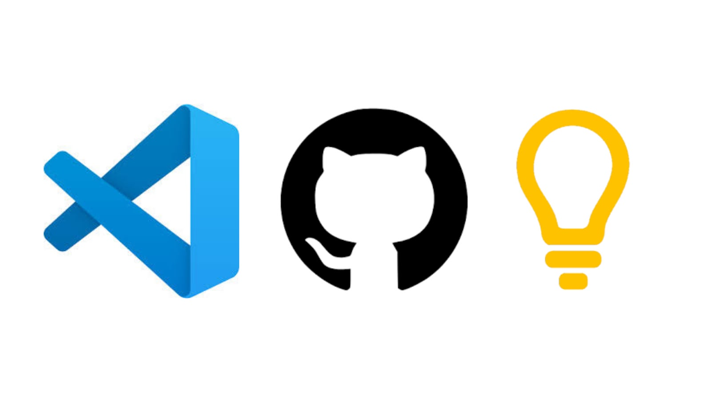
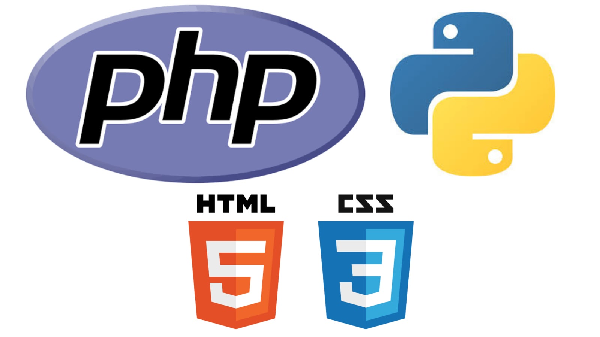

Francisco Kauê de Lima Gonçalves
Início
Sobre mim
Contato
𝐊𝐚𝐮𝐞̂.“I'd rather be a nobody than to be like everyone.”
Ferramentas
Com as quais ja trabalhei.

TECNOLOGIAS
Com as quais ja trabalhei.

Github - Atividade de PHP